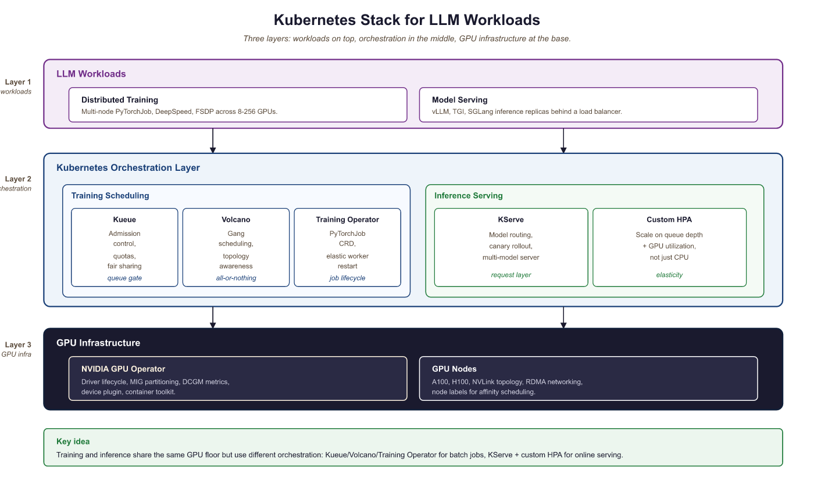

"Kubernetes does not care that your model has 70 billion parameters. It cares about resource requests, health checks, and pod scheduling. The gap between those two worlds is where production LLM engineering lives."
Deploy, Container-Wrangling AI Agent
Kubernetes has become the de facto platform for orchestrating LLM workloads in production, but GPU-intensive LLM training and serving have unique requirements that standard Kubernetes scheduling cannot handle out of the box. This section covers the Kubernetes-native tools and patterns that bridge that gap: GPU-aware batch scheduling with Kueue and Volcano for training jobs, the Kubeflow Training Operator for distributed PyTorchJobs, KServe for production model serving with vLLM and TGI runtimes, NVIDIA GPU Operator for GPU lifecycle management and MIG partitioning, and custom autoscaling strategies tailored to LLM inference workloads. These tools form the infrastructure layer that enables everything from multi-node pretraining runs to low-latency serving of 70B+ models in production.
Prerequisites
This section assumes familiarity with the deployment architectures covered in Section 70.5: Application Architecture and Deployment and the scaling patterns from Section 62.1: Scaling, Performance, and Production Guardrails. Understanding of distributed training from Section 6.6 and inference optimization from Chapter 9 provides essential background. Basic Kubernetes knowledge (pods, deployments, services, CRDs) is assumed.
65.5.1 GPU Scheduling for LLM Training
In a stateless web service, p99 is set by outlier requests and queuing. In token-streaming LLM services, p99 is dominated by long generations: a 5% chance of a response 10x the median length, combined with autoregressive decoding, multiplies p99 by 10x even with a perfect server. This is also why TTFT (time to first token) and TPOT (time per output token) became the dominant SLOs instead of end-to-end latency: they decouple the queuing tail (TTFT) from the length tail (TPOT). Knowing which tail you are debugging tells you which fix applies: TTFT regressions need queue-and-batching attention; TPOT regressions need decoding-speed attention.
Standard Kubernetes scheduling treats GPUs as simple countable resources: a pod requests N GPUs, and the scheduler finds a node with N available. This works for single-node inference but fails for distributed LLM training, which has requirements that the default scheduler cannot express:
- Gang scheduling: A distributed training job needs all its pods to start simultaneously. If only 7 of 8 pods can be placed, the job cannot proceed, and those 7 pods waste GPU resources while waiting for the 8th.
- Topology awareness: Pods in the same tensor-parallel group must be placed on GPUs within the same node (connected by NVLink), while pipeline-parallel groups benefit from being on nodes in the same rack (lower network latency).
- Fair sharing: Multiple teams sharing a GPU cluster need quota management to prevent a single large training job from monopolizing all resources.
- Preemption: High-priority training jobs (nearing deadlines) should be able to preempt lower-priority jobs, which checkpoint and resume later.

Training Operator for batch scheduling; KServe and custom HPA for inference), and GPU infrastructure (NVIDIA GPU Operator with MIG partitioning on A100/H100 nodes)65.5.1.1 Kueue: Admission Control and Quotas
Kueue is the Kubernetes-native job queueing system (part of the Kubernetes SIGs ecosystem) designed for batch and ML workloads. It provides admission control, fair-sharing quotas, and priority-based scheduling for GPU jobs. Kueue does not replace the Kubernetes scheduler; instead, it controls which jobs are admitted to the cluster and when.
Key Kueue concepts for LLM workloads:
- ClusterQueue: Defines the total GPU resources available to a group of users, with borrowing limits and preemption policies.
- LocalQueue: A namespace-scoped queue that teams submit jobs to. Each LocalQueue is bound to a ClusterQueue.
- ResourceFlavor: Distinguishes between GPU types (A100 vs H100), node topologies, or availability zones.
- Workload: Kueue's abstraction of a job. It computes the total resource requirements and decides whether to admit the workload based on quota availability.
apiVersion: kueue.x-k8s.io/v1beta1
kind: ResourceFlavor
metadata:
name: h100-80gb
spec:
nodeLabels:
nvidia.com/gpu.product: "NVIDIA-H100-80GB-HBM3"
topology.kubernetes.io/zone: "us-central1-a"
---
apiVersion: kueue.x-k8s.io/v1beta1
kind: ClusterQueue
metadata:
name: gpu-training-queue
spec:
namespaceSelector: {} # Accept jobs from all namespaces
preemption:
reclaimWithinCohort: Any
withinClusterQueue: LowerPriority
resourceGroups:
- coveredResources: ["cpu", "memory", "nvidia.com/gpu"]
flavors:
- name: h100-80gb
resources:
- name: "nvidia.com/gpu"
nominalQuota: 128 # 128 H100 GPUs total
borrowingLimit: 32 # Can borrow up to 32 from other queues
lendingLimit: 64 # Can lend up to 64 to other queues
- name: "cpu"
nominalQuota: 1024
- name: "memory"
nominalQuota: "8Ti"
---
apiVersion: kueue.x-k8s.io/v1beta1
kind: LocalQueue
metadata:
namespace: llm-team-alpha
name: training-queue
spec:
clusterQueue: gpu-training-queue65.5.1.2 Volcano: Batch Scheduling with Gang Semantics
Volcano is a CNCF project that provides a batch scheduling framework for Kubernetes, with native support for gang scheduling, fair-share policies, and topology-aware placement. For distributed LLM training, Volcano ensures that all pods in a training job are scheduled simultaneously or not at all, preventing resource waste from partial scheduling.
apiVersion: batch.volcano.sh/v1alpha1
kind: Job
metadata:
name: llama-70b-pretraining
namespace: llm-training
spec:
minAvailable: 8 # Gang scheduling: all 8 pods must be schedulable
schedulerName: volcano
plugins:
svc: [] # Create a headless service for pod discovery
ssh: [] # Enable SSH between pods for NCCL
queue: default
policies:
- event: PodEvicted
action: RestartJob # Restart entire job if any pod is evicted
- event: TaskCompleted
action: CompleteJob
tasks:
- replicas: 8 # 8 nodes, each with 8 GPUs
name: trainer
template:
spec:
containers:
- name: trainer
image: nvcr.io/nvidia/pytorch:24.07-py3
command:
- torchrun
- --nproc_per_node=8
- --nnodes=8
- --rdzv_backend=c10d
- --rdzv_endpoint=$(MASTER_ADDR):29400
- train_llm.py
resources:
requests:
nvidia.com/gpu: 8
cpu: "96"
memory: "1500Gi"
limits:
nvidia.com/gpu: 8
env:
- name: NCCL_IB_DISABLE
value: "0" # Enable InfiniBand for NCCL
- name: NCCL_DEBUG
value: "INFO"
schedulerName: volcano
# Topology-aware placement: prefer same rack
affinity:
podAffinity:
preferredDuringSchedulingIgnoredDuringExecution:
- weight: 100
podAffinityTerm:
labelSelector:
matchExpressions:
- key: volcano.sh/job-name
operator: In
values: ["llama-70b-pretraining"]
topologyKey: topology.kubernetes.io/rackminAvailable: 8). All pods must be placed simultaneously or the job stays queued. The podAffinity block prefers same-rack placement to minimize NCCL cross-rack traffic, and RestartJob on eviction ensures the entire job restarts rather than running with missing workers.Who: A cluster operations lead at an AI research lab managing a shared 256-GPU training cluster used by four research teams.
Situation: Teams regularly submitted distributed training jobs requiring 32 to 64 GPUs each. The default Kubernetes scheduler placed pods individually as resources became available.
Problem: A 64-GPU training job had 60 pods placed while 4 waited for resources. Those 60 pods sat idle, consuming 60 GPUs that could have served other jobs. Across the cluster, partial placements wasted 18% of total GPU hours per week, costing roughly $45,000 in idle compute.
Decision: The lead deployed Volcano with gang scheduling (minAvailable set to match each job's total pod count). Jobs were held in the queue until all required pods could be placed simultaneously.
Result: GPU waste from partial placements dropped from 18% to under 2%. Overall cluster utilization rose from 71% to 89%. The four teams reported shorter effective queue times because resources freed by eliminating idle partial jobs became available for complete job placements sooner.
Lesson: Gang scheduling is essential for distributed training on shared clusters. The temporary queue delay of waiting for all resources is far cheaper than the sustained waste of partially placed jobs holding GPUs idle.
65.5.2 Kubeflow Training Operator
The Kubeflow Training Operator provides Kubernetes Custom Resource Definitions (CRDs) for managing distributed training jobs. The PyTorchJob CRD is the most commonly used resource for LLM training, handling the coordination of multi-node PyTorch distributed training including master election, worker discovery, and environment setup.
apiVersion: kubeflow.org/v1
kind: PyTorchJob
metadata:
name: llama-8b-finetune
namespace: llm-training
spec:
elasticPolicy:
rdzvBackend: c10d
minReplicas: 2
maxReplicas: 4 # Elastic: can scale between 2 and 4 nodes
maxRestarts: 3
pytorchReplicaSpecs:
Master:
replicas: 1
restartPolicy: OnFailure
template:
spec:
containers:
- name: pytorch
image: ghcr.io/my-org/llm-trainer:v2.3
command:
- python
- -m
- torch.distributed.run
- --nproc_per_node=8
- --rdzv_backend=c10d
- finetune.py
- --model_name=meta-llama/Llama-3.1-8B
- --dataset=my-org/instruction-data
- --output_dir=/shared/checkpoints/llama-8b-ft
- --per_device_train_batch_size=2
- --gradient_accumulation_steps=4
- --bf16
- --lora_r=16
resources:
requests:
nvidia.com/gpu: 8
cpu: "48"
memory: "256Gi"
limits:
nvidia.com/gpu: 8
volumeMounts:
- name: shared-storage
mountPath: /shared
- name: hf-cache
mountPath: /root/.cache/huggingface
volumes:
- name: shared-storage
persistentVolumeClaim:
claimName: training-pvc
- name: hf-cache
persistentVolumeClaim:
claimName: hf-cache-pvc
Worker:
replicas: 3 # 3 additional workers (4 total with master)
restartPolicy: OnFailure
template:
spec:
containers:
- name: pytorch
image: ghcr.io/my-org/llm-trainer:v2.3
command:
- python
- -m
- torch.distributed.run
- --nproc_per_node=8
- --rdzv_backend=c10d
- finetune.py
- --model_name=meta-llama/Llama-3.1-8B
- --dataset=my-org/instruction-data
- --output_dir=/shared/checkpoints/llama-8b-ft
- --per_device_train_batch_size=2
- --gradient_accumulation_steps=4
- --bf16
- --lora_r=16
resources:
requests:
nvidia.com/gpu: 8
cpu: "48"
memory: "256Gi"
limits:
nvidia.com/gpu: 8
volumeMounts:
- name: shared-storage
mountPath: /shared
- name: hf-cache
mountPath: /root/.cache/huggingface
volumes:
- name: shared-storage
persistentVolumeClaim:
claimName: training-pvc
- name: hf-cache
persistentVolumeClaim:
claimName: hf-cache-pvcelasticPolicy integrates with TorchElastic so training can continue if a worker fails. Both Master and Worker pods mount shared storage for checkpoints and a Hugging Face cache PVC to avoid re-downloading model weights on each restart.The PyTorchJob CRD handles several coordination tasks that are tedious to manage manually: setting the MASTER_ADDR and MASTER_PORT environment variables, configuring WORLD_SIZE and RANK for each worker, creating a headless Service for DNS-based pod discovery, and monitoring pod health to trigger restarts. The elastic policy option integrates with TorchElastic for fault-tolerant training, allowing the job to continue with fewer workers if a node fails (as covered in Section 6.8).
65.5.3 Production LLM Serving on Kubernetes
Serving LLMs in production on Kubernetes requires more than a standard Deployment with a container running vLLM. Production serving needs health checks that understand model loading state, canary rollouts that compare latency and quality metrics between model versions, and resource management that accounts for the unique memory profile of LLM inference (large static model weights plus dynamic KV cache).
65.5.3.1 KServe with vLLM and TGI Runtimes
KServe (formerly KFServing) is the Kubernetes-native model serving framework that provides a standardized inference protocol, autoscaling, canary rollouts, and multi-model serving. For LLM workloads, KServe integrates with vLLM and Text Generation Inference (TGI) as serving runtimes.
apiVersion: serving.kserve.io/v1beta1
kind: InferenceService
metadata:
name: llama-3-1-70b
namespace: llm-serving
annotations:
# Canary rollout: send 10% of traffic to the new version
serving.kserve.io/canaryTrafficPercent: "10"
spec:
predictor:
minReplicas: 2 # Minimum replicas (never scale to zero)
maxReplicas: 8
scaleTarget: 5 # Target concurrent requests per replica
scaleMetric: concurrency
containers:
- name: kserve-container
image: vllm/vllm-openai:v0.6.4
args:
- --model=meta-llama/Llama-3.1-70B-Instruct
- --tensor-parallel-size=4 # 4 GPUs per replica
- --max-model-len=8192
- --gpu-memory-utilization=0.90
- --enable-chunked-prefill
- --max-num-seqs=128
- --port=8080
resources:
requests:
nvidia.com/gpu: 4
cpu: "24"
memory: "200Gi"
limits:
nvidia.com/gpu: 4
ports:
- containerPort: 8080
protocol: TCP
# Custom health checks for LLM model loading
readinessProbe:
httpGet:
path: /health
port: 8080
initialDelaySeconds: 120 # Model loading takes ~2 minutes
periodSeconds: 10
failureThreshold: 3
livenessProbe:
httpGet:
path: /health
port: 8080
initialDelaySeconds: 180
periodSeconds: 30
failureThreshold: 5
startupProbe:
httpGet:
path: /health
port: 8080
initialDelaySeconds: 60
periodSeconds: 10
failureThreshold: 30 # Allow up to 5 minutes for startupcanaryTrafficPercent annotation routes 10% of traffic to a new version during rollouts. Three probe types (readiness, liveness, startup) account for the slow model-loading phase, with the startup probe allowing up to 5 minutes before declaring failure.65.5.3.2 Canary Rollouts for Model Updates
Updating a production LLM (new model version, updated weights, or configuration changes) carries risk. A canary rollout directs a small percentage of traffic to the new version while monitoring key metrics. KServe supports this natively through the canaryTrafficPercent annotation.
A typical canary rollout for an LLM model update follows these stages:
- Deploy canary (5-10% traffic): Deploy the new model version alongside the current one. Route 5-10% of traffic to the canary.
- Monitor metrics (1-4 hours): Compare TTFT (Time to First Token), TPOT (Time Per Output Token), P99 latency, error rate, and (if available) quality metrics between canary and production.
- Promote or rollback: If metrics are within acceptable bounds (typically within 10% of baseline on latency, no increase in error rate), gradually increase canary traffic to 25%, 50%, then 100%. If any metric degrades, roll back immediately.
Who: An MLOps engineer at a fintech company operating a production API that used Llama 3.1 70B to extract structured data from financial documents.
Situation: The team wanted to upgrade to Llama 3.2 70B for its improved instruction following and lower latency. The API served 50,000 requests per day, and downstream systems depended on valid JSON output.
Problem: A direct cutover risked breaking production if the new model behaved differently on edge cases. The team needed a way to validate the upgrade under real traffic without exposing all users to potential regressions.
Decision: They deployed Llama 3.2 70B as a canary serving 10% of traffic, with automated monitoring comparing TTFT, P99 TPOT, and structured JSON error rates between the canary and the baseline.
Result: After 2 hours, monitoring showed Llama 3.2 had 12% lower TTFT (improved) and equivalent P99 TPOT, but the error rate on structured JSON output had increased by 3% due to a prompt template incompatibility. The canary was rolled back automatically. The team updated the prompt template, redeployed the canary, and confirmed all metrics were within bounds before promoting to 100% traffic. The regression was caught before it affected 90% of users.
Lesson: Canary deployments with automated metric comparison are essential for model upgrades. Even models from the same family can introduce subtle behavioral changes that break downstream integrations, and only real traffic reveals these regressions reliably.
65.5.4 GPU Sharing and Isolation
A single high-end GPU (H100 with 80 GB HBM3) is often more than what a small LLM inference workload needs. Serving a 7B model in FP16 requires approximately 14 GB of GPU memory, leaving 66 GB unused on an H100. GPU sharing techniques allow multiple models or workloads to share a single physical GPU, dramatically improving cluster utilization.
65.5.4.1 NVIDIA GPU Operator
The NVIDIA GPU Operator automates the management of all NVIDIA software components needed for GPU workloads on Kubernetes: drivers, container toolkit, device plugin, DCGM (Data Center GPU Manager), and MIG (Multi-Instance GPU) configuration. It runs as a set of DaemonSets that ensure every GPU node has the correct software stack.
65.5.4.2 MIG Partitioning for Multi-Model Serving
Multi-Instance GPU (MIG) partitions a single physical GPU into isolated instances, each with its own compute cores, memory, and memory bandwidth. On an H100, MIG supports up to 7 instances, each with its own slice of the GPU's SM (Streaming Multiprocessor) array and HBM.
| Profile | SMs | Memory | Suitable For |
|---|---|---|---|
| 1g.10gb | 14 | 10 GB | Small models (<3B), embeddings |
| 2g.20gb | 28 | 20 GB | 7B models (INT4/INT8 quantized) |
| 3g.40gb | 42 | 40 GB | 7B models (FP16), 13B (INT4) |
| 4g.40gb | 56 | 40 GB | 13B models (FP16) |
| 7g.80gb | 114 | 80 GB | Full GPU (no partitioning) |
# Document 1: cluster-wide MIG layout for the H100 fleet.
# Applied via the NVIDIA GPU Operator; rebooting nodes is required for
# the partitioning to take effect.
apiVersion: nvidia.com/v1alpha1
kind: MIGConfig
metadata:
name: llm-serving-mig
spec:
mig-config:
# Partition each H100 into one 3g.40gb + two 2g.20gb instances
# Suitable for: one 7B FP16 model + two quantized small models
- devices: all
mig-enabled: true
mig-devices:
"3g.40gb": 1 # For a 7B FP16 model (primary)
"2g.20gb": 2 # For two INT4 quantized models (secondary)
---
# Document 2: a Pod that claims one of the 3g.40gb MIG instances.
# The scheduler routes this Pod onto a node that exposes that profile.
apiVersion: v1
kind: Pod
metadata:
name: llama-7b-serving
labels:
app: llama-7b-serving
component: primary-inference
spec:
restartPolicy: Always
containers:
- name: vllm
image: vllm/vllm-openai:v0.6.4
args:
- "--model"
- "meta-llama/Llama-3.1-7B-Instruct"
- "--max-model-len"
- "4096"
resources:
limits:
nvidia.com/mig-3g.40gb: 1 # Request one 3g.40gb MIG instancenvidia.com/mig-3g.40gb resource, receiving hardware-isolated GPU memory and compute.65.5.4.3 MPS for Time-Slicing
NVIDIA Multi-Process Service (MPS) provides time-slicing of a GPU among multiple CUDA contexts. Unlike MIG, which creates hardware-isolated partitions, MPS shares the GPU's compute and memory across processes with software-level scheduling. MPS is simpler to configure than MIG but offers weaker isolation: a misbehaving process can affect others sharing the GPU.
For LLM serving, MPS is useful when multiple small models (embeddings, classifiers, rerankers) need GPU access but none individually justifies a full GPU or a MIG partition. The NVIDIA device plugin supports MPS-based GPU sharing through the nvidia.com/gpu resource with the sharing.timeSlicing configuration in the GPU Operator's ClusterPolicy.
Choose MIG when workloads need guaranteed memory and compute isolation (production LLM serving with SLAs). Choose MPS when workloads are bursty and can tolerate occasional contention (batch embedding computation, development environments). Never use MPS for latency-sensitive LLM serving in production, because a co-located workload's GPU memory allocation can cause out-of-memory errors in the serving process. MIG avoids this by providing hardware-level memory isolation.
Before choosing between MIG and MPS, profile your actual workload mix. Run nvidia-smi dmon for 24 hours and check GPU memory and compute utilization per process. If any single model uses more than 40% of GPU memory, MIG partitioning will not leave enough room for meaningful co-tenancy. In that case, dedicate the full GPU and use node-level scheduling to pack smaller workloads elsewhere.
65.5.5 Autoscaling LLM Services
Standard Kubernetes HPA (Horizontal Pod Autoscaler) scales based on CPU or memory utilization. For LLM serving, these metrics are poor proxies for load because GPU utilization and request queue depth are the actual bottlenecks. Effective LLM autoscaling requires custom metrics and strategies tailored to inference workload patterns.
65.5.5.1 Custom Metrics for LLM Autoscaling
The most useful autoscaling signals for LLM inference workloads are:
| Metric | Source | Target | When to Use |
|---|---|---|---|
| Queue depth | vLLM /metrics | < 10 pending requests | Bursty traffic patterns |
| TTFT P95 | Prometheus | < 500ms | Latency-sensitive applications |
| GPU KV cache usage | vLLM /metrics | < 80% utilization | Long-context workloads |
| Requests per second | Istio/Envoy | Throughput target | Steady, predictable traffic |
| Active sequences | vLLM /metrics | Per-replica concurrency limit | Streaming responses |
apiVersion: autoscaling/v2
kind: HorizontalPodAutoscaler
metadata:
name: llama-70b-hpa
namespace: llm-serving
spec:
scaleTargetRef:
apiVersion: apps/v1
kind: Deployment
name: llama-70b-vllm
minReplicas: 2
maxReplicas: 12
behavior:
scaleUp:
stabilizationWindowSeconds: 60 # Wait 60s before scaling up
policies:
- type: Pods
value: 2 # Add at most 2 pods at a time
periodSeconds: 120
scaleDown:
stabilizationWindowSeconds: 300 # Wait 5 min before scaling down
policies:
- type: Pods
value: 1 # Remove at most 1 pod at a time
periodSeconds: 300 # Every 5 minutes
metrics:
# Primary metric: request queue depth from vLLM
- type: Pods
pods:
metric:
name: vllm_num_requests_waiting
target:
type: AverageValue
averageValue: "5" # Scale up if >5 waiting requests
# Secondary metric: TTFT P95 latency
- type: Pods
pods:
metric:
name: vllm_time_to_first_token_p95
target:
type: AverageValue
averageValue: "500" # Scale up if TTFT P95 > 500msvllm_num_requests_waiting (queue depth), with TTFT P95 as a secondary trigger. Asymmetric stabilization windows (60s up, 300s down) prevent thrashing during traffic fluctuations.65.5.5.2 Scale-to-Zero with Warm Pools
For LLM services that serve intermittent traffic (internal tools, development environments, low-traffic endpoints), scaling to zero when idle saves significant GPU cost. However, LLM cold starts are slow: loading a 70B model from disk to GPU takes 2-5 minutes, which is unacceptable for user-facing services.
Warm pool strategies mitigate cold starts by maintaining a pool of pre-loaded model replicas that are suspended (GPU memory retained but not actively serving) rather than fully terminated. When traffic arrives, a warm replica can begin serving within seconds rather than minutes. KServe supports scale-to-zero with configurable grace periods:
InferenceService.spec.predictor object; together they let GPU resources release after 10 minutes of inactivity and recover within seconds when traffic returns.| Key | Value | Behavior |
|---|---|---|
predictor.minReplicas | 0 | Permit scale-to-zero; required for cost release on idle |
predictor.scaleTarget | 1 | Each replica handles one concurrent inference at a time |
autoscaling.knative.dev/scale-to-zero-pod-retention-period | 10m | Grace period before releasing the last replica |
autoscaling.knative.dev/window | 120s | Sliding window used to evaluate traffic for scale decisions |
65.5.5.3 Cold-Start Mitigation Strategies
For services that cannot tolerate cold-start latency, several strategies reduce or eliminate startup time:
- Model preloading via init containers: An init container downloads the model weights to a local SSD (hostPath or emptyDir) before the serving container starts, parallelizing model download with pod scheduling.
- Shared model cache (ReadWriteMany PVC): Store model weights on a shared file system (Lustre, GCS FUSE, EFS) so that new replicas read from cache rather than downloading from the model registry.
- Predictive scaling: Use historical traffic patterns to pre-scale before expected demand spikes (e.g., scale up at 8 AM before the workday begins).
- CUDA memory snapshots: Experimental approaches that snapshot the GPU state of a loaded model and restore it on a new GPU, reducing cold start to seconds.
Google's internal LLM serving infrastructure reportedly keeps "standby" TPU pods with models pre-loaded in memory, consuming significant resources even when idle. The cost of this approach is justified by the even larger cost of lost revenue when a user-facing LLM service takes 3 minutes to respond to the first request after a scale-up event. The engineering trade-off between idle resource cost and cold-start penalty is one of the defining tensions in production LLM serving economics.
65.5.6 Networking and Storage Considerations
Distributed LLM training on Kubernetes has unique networking requirements. NCCL (NVIDIA Collective Communications Library) needs high-bandwidth, low-latency communication between GPU pods, typically over InfiniBand or RoCE (RDMA over Converged Ethernet). Standard Kubernetes networking (overlay networks, kube-proxy) adds unacceptable overhead for collective operations.
65.5.6.1 Network Configuration for NCCL
- Host networking: The simplest approach is to use
hostNetwork: trueon training pods, bypassing the Kubernetes overlay network entirely. This gives pods direct access to the InfiniBand or RDMA interfaces. - SR-IOV device plugin: For clusters that require network isolation, the SR-IOV device plugin exposes virtual functions (VFs) from the InfiniBand HCA as Kubernetes resources that pods can request.
- RDMA shared device plugin: Allows multiple pods on the same node to share an RDMA interface without SR-IOV, useful for development and smaller-scale training.
65.5.6.2 Storage for Checkpoints and Model Artifacts
Distributed checkpointing (covered in Section 6.8) requires a parallel file system or object storage that all training pods can write to simultaneously. Common options on Kubernetes include:
- Lustre or GPFS (via CSI driver): High-performance parallel file systems that provide the bandwidth needed for large checkpoint writes. Best for clusters with dedicated storage infrastructure.
- GCS FUSE / S3 FUSE: Mount cloud object storage as a POSIX file system. Simpler to set up but lower write throughput; suitable for async checkpoint staging where the GPU-to-CPU copy is the blocking step.
- Local NVMe (hostPath/emptyDir): Fastest for temporary storage (local checkpoint staging, model cache) but not shared across nodes and not persistent across pod restarts.
Standard Kubernetes resource requests and limits are not sufficient for GPU workloads. Unlike CPU and memory, GPUs cannot be shared across pods at fractional granularity without hardware support (MIG or time-slicing). A pod requesting "1 GPU" gets an entire physical GPU, and if your scheduling does not account for GPU topology (NVLink, PCIe affinity), multi-GPU training jobs may experience dramatically degraded communication performance. Always use topology-aware scheduling and gang scheduling for distributed training.
The Kubernetes ecosystem for LLM workloads is evolving rapidly. LeaderWorkerSet is a new Kubernetes API (alpha in 2024) designed specifically for multi-node ML training, providing native support for gang scheduling and topology-aware placement without external schedulers. Dynamic Resource Allocation (DRA) is a Kubernetes feature that will enable more sophisticated GPU scheduling, including MIG partition management, time-slicing policies, and GPU health monitoring at the scheduler level. Multi-cluster training research explores running a single training job across multiple Kubernetes clusters in different regions, using WAN-optimized collective operations to overcome cross-region bandwidth limitations.
Objective
Serve a language model using vLLM's OpenAI-compatible API server, then measure latency and throughput under load using Locust. You will first build a manual benchmarking harness (the "right tool" baseline), then use Locust for systematic load testing with configurable concurrency profiles.
What You'll Practice
- Deploying an LLM with vLLM's high-performance serving engine
- Measuring time-to-first-token (TTFT) and end-to-end latency
- Writing Locust load test scripts for LLM inference endpoints
- Analyzing throughput, p50/p95/p99 latencies, and error rates under concurrent load
Setup
Install vLLM and Locust. A GPU with at least 8 GB VRAM is required for serving. If no GPU is available, you can substitute any OpenAI-compatible endpoint.
Steps
Step 1: Start the vLLM server
Launch vLLM with a small model. The server exposes an OpenAI-compatible /v1/completions endpoint.
# Start vLLM in a separate terminal
python -m vllm.entrypoints.openai.api_server \
--model TinyLlama/TinyLlama-1.1B-Chat-v1.0 \
--port 8000 \
--max-model-len 2048--tensor-parallel-size N to shard across multiple GPUs.Hint
Wait until you see "Uvicorn running on http://0.0.0.0:8000" before proceeding. If you hit out-of-memory errors, reduce --max-model-len or switch to a smaller model like facebook/opt-125m.
Step 2: Manual latency benchmark (from scratch)
Before using a load-testing framework, build a simple benchmark script to measure baseline latency. This reveals exactly what each timing metric captures.
import requests
import time
import statistics
def measure_request(prompt, max_tokens=50):
"""Send a single completion request and measure timing."""
start = time.perf_counter()
response = requests.post(
"http://localhost:8000/v1/completions",
json={
"model": "TinyLlama/TinyLlama-1.1B-Chat-v1.0",
"prompt": prompt,
"max_tokens": max_tokens,
"temperature": 0.0,
},
)
end = time.perf_counter()
data = response.json()
latency_ms = (end - start) * 1000
tokens_generated = data["usage"]["completion_tokens"]
tokens_per_sec = tokens_generated / (latency_ms / 1000) if latency_ms > 0 else 0
return {
"latency_ms": latency_ms,
"tokens": tokens_generated,
"tokens_per_sec": tokens_per_sec,
}
# Run 10 sequential requests for baseline measurement
prompt = "Explain the concept of attention in neural networks in three sentences."
results = [measure_request(prompt) for _ in range(10)]
latencies = [r["latency_ms"] for r in results]
throughputs = [r["tokens_per_sec"] for r in results]
print("Manual Benchmark (10 sequential requests):")
print(f" Median latency: {statistics.median(latencies):.1f} ms")
print(f" P95 latency: {sorted(latencies)[8]:.1f} ms")
print(f" Mean throughput: {statistics.mean(throughputs):.1f} tokens/sec")
print(f" Tokens per req: {results[0]['tokens']}")Step 3: Write a Locust load test
Create a Locust test file that simulates concurrent users hitting the LLM endpoint. Locust provides real-time statistics, percentile breakdowns, and failure tracking.
# Save this as locustfile.py
from locust import HttpUser, task, between
import json
class LLMUser(HttpUser):
"""Simulates a user sending completion requests to the LLM."""
wait_time = between(0.5, 2.0)
host = "http://localhost:8000"
prompts = [
"Summarize the key ideas of transformer architecture.",
"What are the benefits of quantization for LLM deployment?",
"Explain continuous batching in three sentences.",
"Describe the difference between prefill and decode phases.",
"What is KV cache and why does it matter for inference?",
]
@task
def generate_completion(self):
import random
prompt = random.choice(self.prompts)
payload = {
"model": "TinyLlama/TinyLlama-1.1B-Chat-v1.0",
"prompt": prompt,
"max_tokens": 100,
"temperature": 0.7,
}
with self.client.post(
"/v1/completions",
json=payload,
catch_response=True,
) as response:
if response.status_code == 200:
data = response.json()
tokens = data["usage"]["completion_tokens"]
response.success()
else:
response.failure(f"Status {response.status_code}")Step 4: Run the load test and analyze results
Execute the Locust test with increasing concurrency levels to find the serving capacity and latency curve of your deployment.
# Run Locust in headless mode with 10 concurrent users
locust -f locustfile.py --headless \
--users 10 --spawn-rate 2 --run-time 60s \
--csv results/load_test
# For the web UI (interactive), omit --headless:
# locust -f locustfile.pyimport pandas as pd
# Analyze the Locust CSV output
stats = pd.read_csv("results/load_test_stats.csv")
print(stats[["Name", "Request Count", "Median Response Time",
"95% Response Time", "99% Response Time",
"Average Response Time", "Requests/s"]].to_string(index=False))
# Compare with the manual baseline
print(f"\nManual baseline median: {statistics.median(latencies):.1f} ms")
print(f"Load test median: {stats['Median Response Time'].iloc[-1]:.1f} ms")
print(f"Latency increase: "
f"{stats['Median Response Time'].iloc[-1] / statistics.median(latencies):.1f}x")Stretch Goals
- Run the load test at 1, 5, 10, 25, and 50 concurrent users. Plot a latency-vs-concurrency curve to identify the saturation point.
- Enable vLLM's streaming mode (
"stream": true) and measure time-to-first-token separately from total generation time. - Add a second model replica behind a reverse proxy (nginx or HAProxy) and compare throughput with a single instance versus two load-balanced instances.
- Standard Kubernetes scheduling is insufficient for distributed LLM training. Gang scheduling (Volcano) ensures all pods start simultaneously, and quota management (Kueue) provides fair resource sharing across teams.
- The Kubeflow Training Operator's PyTorchJob CRD automates the coordination of multi-node distributed training, including elastic scaling and fault-tolerant restarts.
- KServe provides production-grade LLM serving on Kubernetes with vLLM/TGI runtimes, canary rollouts, and custom health checks that account for model loading time.
- MIG partitioning enables hardware-isolated GPU sharing for multi-model serving, while MPS provides softer time-slicing for less critical workloads.
- LLM autoscaling requires custom metrics (queue depth, TTFT, KV cache utilization) rather than standard CPU/memory metrics. Scale-to-zero with warm pools balances cost savings against cold-start latency.
- Distributed training on Kubernetes requires host networking or SR-IOV for NCCL performance, and parallel file systems or object storage for distributed checkpointing.
Exercises
Your team shares a Kubernetes cluster with 128 H100 GPUs across 16 nodes. Three teams need: Team A needs 64 GPUs for a pretraining job, Team B needs 32 GPUs for fine-tuning, and Team C needs 16 GPUs for serving. Design a Kueue configuration with ClusterQueues and quotas that ensures fair sharing while allowing Team A to borrow unused GPUs from other teams.
Answer Sketch
Create three ClusterQueues: training-a (nominalQuota=64, borrowingLimit=32), training-b (nominalQuota=32, borrowingLimit=16), serving-c (nominalQuota=16, lendingLimit=16, borrowingLimit=0). Team A can borrow up to 32 GPUs from B and C when they are idle. Team C's serving queue has no borrowing (stable allocation for production). Preemption policy: serving-c has highest priority (never preempted), training-a and training-b have equal priority with LowerPriority preemption within their queues.
Write a complete KServe InferenceService YAML for serving Mistral-7B-Instruct using vLLM with tensor parallelism across 2 GPUs. Include appropriate health checks, autoscaling based on queue depth, and a canary configuration for rolling out a new model version.
Answer Sketch
InferenceService with predictor container running vllm/vllm-openai, args: --model=mistralai/Mistral-7B-Instruct-v0.3, tensor-parallel-size=2, max-model-len=32768. Resources: 2 nvidia.com/gpu. Readiness probe on /health with initialDelaySeconds=90. HPA targeting vllm_num_requests_waiting with averageValue of 3. Canary annotation at 10%. MinReplicas=1, maxReplicas=6.
You need to serve three models on a single H100: a 7B chat model (primary, latency-sensitive), a 1.5B embedding model, and a 0.5B classifier. Design a MIG partition scheme. Calculate the memory requirements for each model and verify they fit within the chosen MIG profiles. What happens if the chat model needs a longer context window?
Answer Sketch
7B FP16 needs ~14 GB for weights plus KV cache. Use 3g.40gb (40 GB, ample for 8K context). 1.5B FP16 needs ~3 GB. Use 2g.20gb. 0.5B needs ~1 GB. Use 1g.10gb. Remaining partition: 1g.10gb unused (spare). If the chat model needs 32K context, KV cache grows to ~8 GB additional, total ~22 GB: still fits in 3g.40gb. At 128K context, KV cache grows to ~32 GB: need to upgrade to 4g.40gb and reconfigure other partitions.
Compare three autoscaling strategies for an LLM serving endpoint with bursty traffic: (a) HPA based on queue depth, (b) HPA based on TTFT P95, (c) Knative concurrency-based autoscaling. For each, describe the advantages, disadvantages, and failure modes. Which would you choose for a user-facing chatbot with a 2-second TTFT SLA?
Answer Sketch
(a) Queue depth: fast signal, direct indicator of overload, but does not capture latency directly. (b) TTFT P95: directly measures user experience, but lagging indicator (by the time P95 degrades, users are already affected). (c) Knative concurrency: proactive, limits requests per pod, but does not account for variable request complexity. For a 2-second TTFT SLA: use (a) as primary with aggressive thresholds (scale at queue > 3), supplemented by (b) as a safety net. Knative concurrency is a good default but harder to tune for LLM workloads where request duration varies 10x based on output length.
What Comes Next
In this section we covered gpu scheduling for llm training, kubeflow training operator, and related topics. This concludes the current chapter. Return to the chapter overview to review the material or explore related chapters.